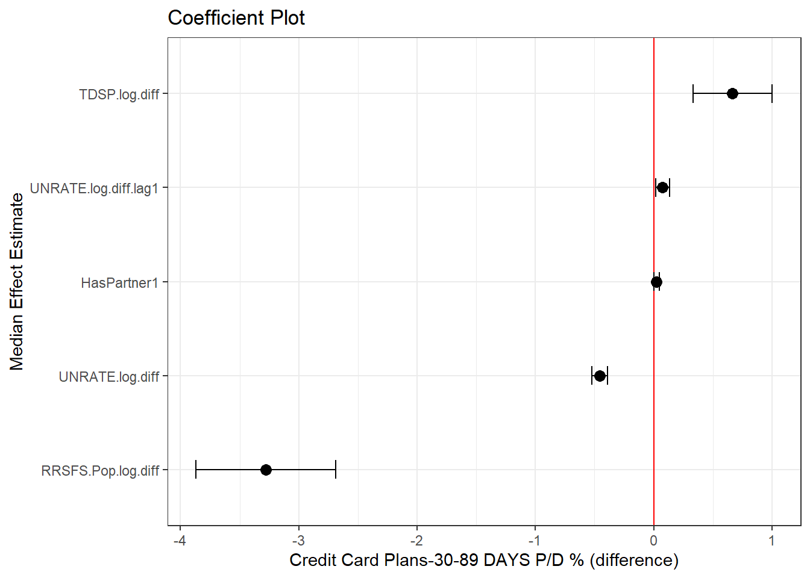
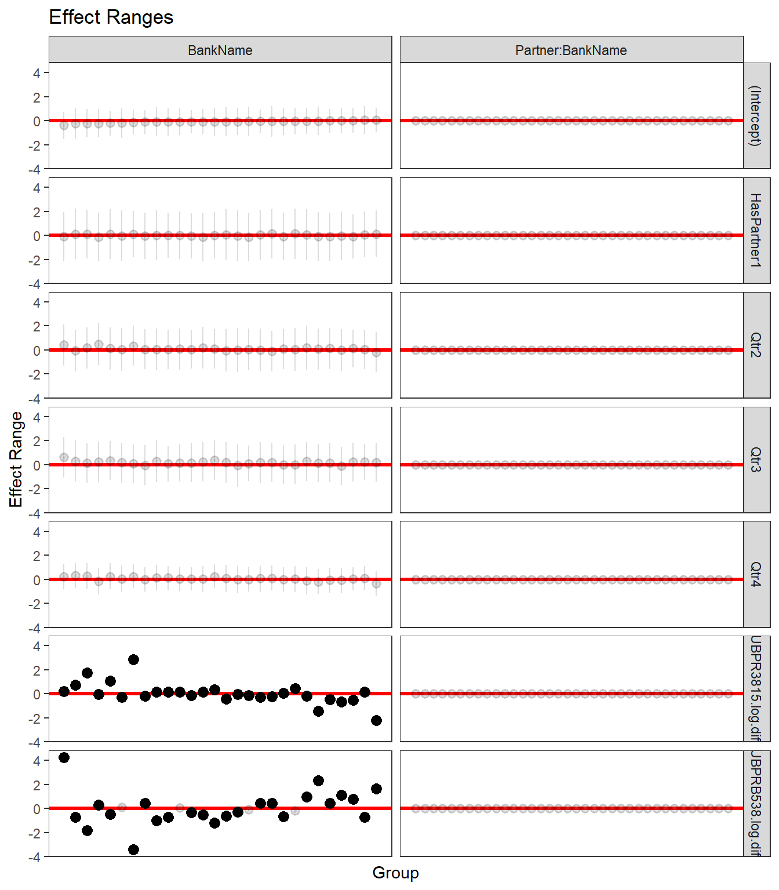

m1 <- lmer(UBPRE524.diff ~ HasPartner + (1 + HasPartner + Qtr+ UBPRB538.log.diff + UBPR3815.log.diff | BankName/Partner) + TDSP.log.diff + RRSFS.Pop.log.diff + UNRATE.log.diff + UNRATE.log.diff.lag1, data = hier_data, REML = FALSE)
m2 <- lmer(UBPRE524.diff ~ HasPartner + (1 + HasPartner + Qtr+ UBPRB538.log.diff + UBPR3815.log.diff | BankName/Partner) + TDSP.log.diff + RRSFS.Pop.log.diff + UNRATE.log.diff + UNRATE.log.diff.lag1 + UNRATE.log.diff.lag2, data = hier_data, REML = FALSE)
m3 <- lmer(UBPRE524.diff ~ HasPartner + (1 + HasPartner + Qtr+ BankType + UBPRB538.log.diff + UBPR3815.log.diff | BankName/Partner) + TDSP.log.diff + TDSP.log.diff.lag1, data = hier_data, REML = FALSE)
m4 <- lmer(UBPRE524.diff ~ HasPartner + (1 + HasPartner + UBPRB538.log.diff + UBPR3815.log.diff | BankName/Partner) + TDSP.log.diff + RRSFS.Pop.log.diff + UNRATE.log.diff + UNRATE.log.diff.lag1, data = hier_data, REML = FALSE)
m5 <- lmer(UBPRE524.diff ~ HasPartner + (1 + HasPartner + UBPRE524.log.diff.lag1 + UBPRB538.log.diff + UBPR3815.log.diff | BankName/Partner) + TDSP.log.diff + RRSFS.Pop.log.diff + UNRATE.log.diff + UNRATE.log.diff.lag1, data = hier_data, REML = FALSE)
m6 <- lmer(UBPRE524.diff ~ HasPartner + (1 + HasPartner + UBPRE524.log.diff.lag4 + UBPRB538.log.diff + UBPR3815.log.diff | BankName/Partner) + TDSP.log.diff + RRSFS.Pop.log.diff + UNRATE.log.diff + UNRATE.log.diff.lag1, data = hier_data, REML = FALSE)
m7 <- lmer(UBPRE524.diff ~ HasPartner + (1 + HasPartner + Qtr + UBPRE524.log.diff.lag4 + UBPRB538.log.diff + UBPR3815.log.diff | BankName/Partner) + TDSP.log.diff + RRSFS.Pop.log.diff + UNRATE.log.diff + UNRATE.log.diff.lag1, data = hier_data, REML = FALSE)11 Hierarchical study
This approach is comparable to a treatment study that compare outcomes before and after an intervention. In our case the treatment is the partnership.
For example, for Costco our dummy variable ‘HasPartner’ is True for AMERICAN EXPRESS until 2016 Q2, then False after the portfolio is transferred to CITIBANK. CITIBANK’s ‘HasPartner’ is now True for Costco.
We can represent this as: \[ Y_{it} = \alpha + \beta X_{it} + \gamma D_{it} + \mu_i + \epsilon_{it} \]
Where: \(Y_{it}\) is the dependent variable for entity \(i\) at time \(t\).
\(X_{it}\) represents the independent variable(s) for entity \(i\) at time \(t\).
\(D_{it}\) is the dummy variable ‘HasPartner’ for partner (1 has partner, 0 does not have partner).
\(\alpha\) is the constant term.
\(\beta\) is the coefficient for the independent variable(s).
\(\gamma\) is the coefficient for the dummy variable.
\(\mu_i\) represents the entity-specific fixed effect.
\(\epsilon_{it}\) is the error term.
The coefficient \(\gamma\) on the dummy variable indicates the average change in the target variable associated with having a partner, controlling for other factors.
Various models are tested to identify which achieves the lowest AICc value. We can leverage what we have learnt so far; our starting point takes the model variables used by the best hierarchical event study.
11.0.1 Model Choice
Code
model_compare <- model.sel( m1,m2,m3,m4,m5,m6,m7, rank = "AICc")
model_compare |> as.data.frame() |> rownames_to_column(var = "Model")|>
mutate(across(where(is.numeric), \(x) round(x,2))) |>
relocate(df:weight, .after = Model) |>
dplyr::select(Model, df, logLik, AICc, delta, weight) |>
rmarkdown::paged_table() Table 11.1:
AICc Summary. The lower the AICc value, the better the balance between model complexity (number of parameters) and goodness of fit
The best model based on AICc is model m1.
Code
top_model <- lmer(formula(m1), data = hier_data, REML = TRUE)
#summary(top_model)
#coef(top_model)11.0.2 Fixed Effects
Code
result_plots <- generate_fixed_random_plts(top_model)
result_plots$FE
Code
tidy(top_model, effects = "fixed") |>
mutate(across(where(is.numeric), \(x) round(x,2))) |>
dplyr::select(-effect) |>
rmarkdown::paged_table()
cov2cor(vcov(top_model)) |> as.matrix() |> as.data.frame() |>
mutate(across(where(is.numeric), \(x) round(x,2))) |>
rmarkdown::paged_table() Table 11.2: Coefficients and Correlation of Fixed Effects
(a)
Coefficients
?(caption)
(b)
Correlation of Fixed Effects
?(caption)
If we look at the effect of ‘HasPartner’ this is 0.02 percentage points of our target measure. The std.error is half at 0.01. This suggests that the estimate is less precise, meaning there’s more uncertainty about the true value of the coefficient.
The high t-statistics for all the other terms, particularly UNRATE.log.diff, indicate that the effects are quite precise and the likelihood that this finding is due to chance is very small.
11.0.3 Random Effects
Code
result_plots$RE 
The red line indicates no effect (zero), and the dots represent the random effect estimates with their confidence intervals. Points that are distinguishable from zero (i.e. the confidence band does not cross the red line) are highlighted as black dots, whereas the grey dots are where the confidence band cross the red line.
Code
ranef(top_model, condVar = FALSE)$BankName |> as.data.frame() |>
rownames_to_column(var = "Entity") |>
filter(!grepl("None", Entity)) |>
mutate(across(where(is.numeric), \(x) round(x,2))) |>
rmarkdown::paged_table()
ranef(top_model, condVar = FALSE)$`Partner:BankName` |> as.data.frame() |>
rownames_to_column(var = "Entity") |>
filter(!grepl("None", Entity)) |>
mutate(across(where(is.numeric), \(x) round(x,2))) |>
rmarkdown::paged_table()Table 11.3: Intercept and coefficients
(a)
Random Effects for BankName
?(caption)
(b)
Random Effects for Partner:BankName
?(caption)
From Figure 11.2 we can see that the random effect of Partnership is not distinguishable from zero i.e. the contribution to the variability of our target measure could be by chance alone.
11.0.4 Conclusion
We did not find conclusive evidence that partnerships directly impact credit card delinquency.